Love live!School Idol Project
.jpg) 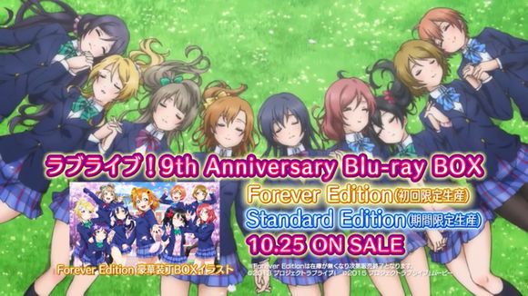
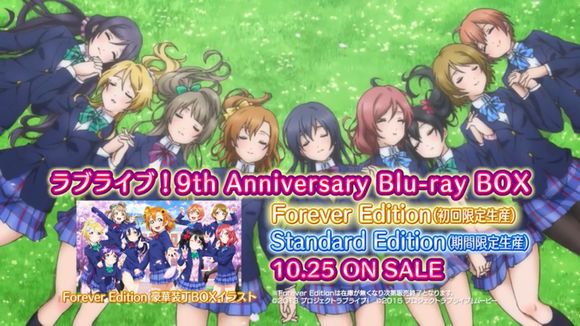
μ's
Aqours
Questionarie
Songs
Animes
μ's
Click here to start our dream!A traditional college in Tokyo's chiyoda district, yinaikiba college, is facing a crisis of discontinuation because of a sharp drop in enrollment.Nine of them came up with the idea of becoming idols. Once they became idols, the fame of the school would increase and the number of students would increase.In this way, nine girls with distinctive personalities decided to work together to become an idol, hoping to increase the popularity of the idol to save their favorite campus.


Choose a music to start your dream!
·Kousaka Honoka
·Minami Kotori
·Sonoda Umi
·Nishikino Maki
·Hoshizora Rin
·KoizumiHanayo
·Ayase Eli
·Tojo Nozomi
·Yazawa Nico
Kousaka Honoka
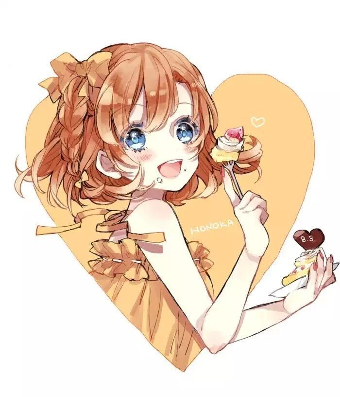
Kousaka, 16 years old, is a second year senior high school student of inai musaka college.Smile whenever you can, and be cheerful whenever you can.Acting on instinct and whim is a one-track mind that plunges into action once it has been decided.Home business the old Japanese traditional dessert and fruit house "ear village (meet む ら)".Because of the relationship between the home and pastry shop, little contact with bread, so very like to eat bread. The second season began as the new President of the student union. Personality traitsTypical clumsy character.I usually do things without thinking, so I often make mistakes, but when I get serious, I get into it, and I always do what I say.No matter what time is full of vitality, full of vitality, no matter what difficulties can be faced with an optimistic spirit.Very like to eat snacks, typical foodie attributes.Because of the reason of greediness, often can have about weight trouble so.The room is always untidy.Occasionally, it shows its natural dark side.Sophomore year in high school.The founder of muon's.Smile all the time in a word, it is good to keep up one's spirits.Act on instinct and whim. Once you've made up your mind, go headlong.Many little difficulties can also be with a natural super optimistic spirit of a breakthrough.Muon's engine and tractor.
Minami Kotori
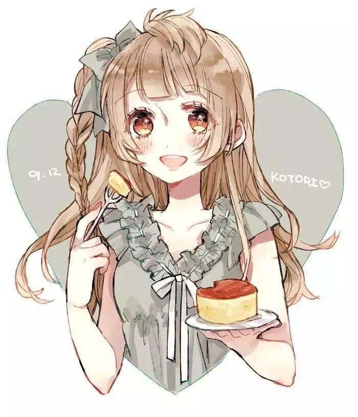
Minami Kotori, a 16-year-old girl.Second year of high school.Kousaka Honoka and Sonoda Umi were childhood sweethearts and have been together since kindergarten.Is Honoka's best friend (Umi in the novel).Compared with panicai fruit character quiet gentle, temper is very good, learning is also very excellent students.Personality traitsGentle and gentle personality, good temper, and Honoka form a sharp contrast.Although quiet introverted but strong heart, will not be timid.With poor assertiveness, I will hesitate when faced with a choice, so I need a companion like Honoka to guide me straight forward.In the novel there is a little belly dark personality, once secretly gave himself a "dejected girl Umi" puppetAnimated Kotori character:Cheerful personality, gentle and brave and strong heart.Gentle and less assertive but not indecisive.Good at comforting people, will stand up and comfort everyone when they feel frustrated.Easy-going and optimistic personality, lively and gentle, although some of the personality is introverted, some prudent but natural and generous not very shy and heart cheerful and very brave, although the appearance of wen wan weak but the heart is very firm, dare to undertake is not easy to shake, on the small things more easygoing conformity, big idea took very decided.Belong to typical outside soft inside firm character.Because the reaction is a little slow so always be called natural, let a person feel a little clumsy.Kotori usually looks gentle and natural, in fact, is a slight natural black role, class had secretly shot Honoka sleep appearance, because to draw materials, also with Honoka and others said 'what is a deer in class secretly shot.'" Kotori said something a little dark and sometimes funny (in the animation).The personality is not very prominent but people feel lovely, just right gentle, strong, naughty (natural black point can be reflected), intelligent, virtuous.Under normal circumstances is very cheerful, but also have a rare soft sister character.I like soft things very much, and I have a strange taste for beauty. I am even fascinated by two alpacas in the school.Honoka's best friend.From kindergarten has been together since childhood intimate relationship.With Honoka contrast personality gentle gentle, learning is also very excellent students.Although quiet introverted but strong heart,but will not be timid.
Sonoda Umi
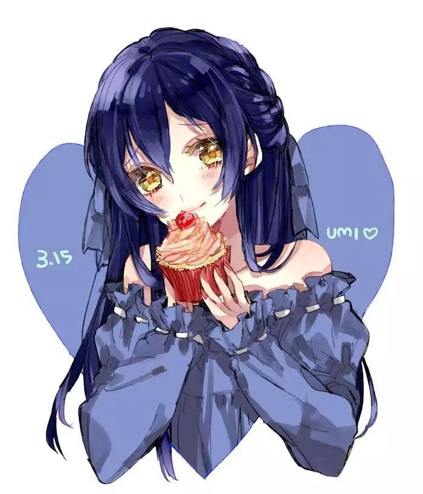
16 years old, sophomore in high school.Born in a traditional family of Japanese dance, sending out an aerious manner of yamato fuzi.Bow cultivation since childhood, the etiquette of the law thoughtful and complete girls.A model of disciplining oneself and disciplining others.
Nishikino Maki
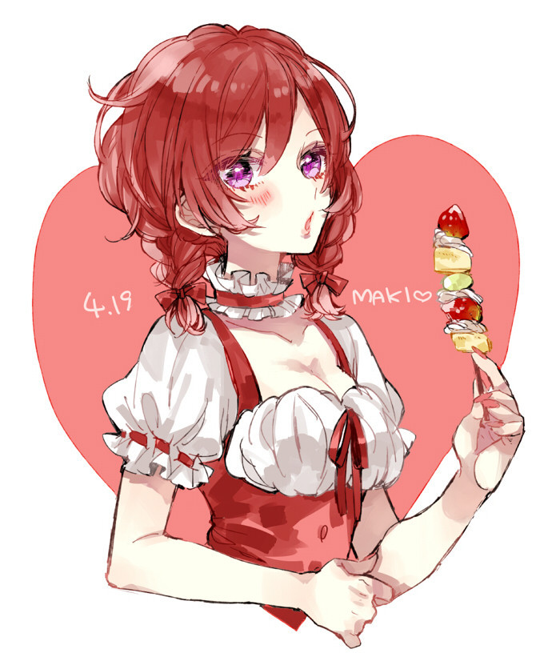
At the age of 15.First year of high school.The rich lady whose parents run the big hospital.Outstanding singing, piano is also eagerly awaited by the first grade students.Strong momentum and self-esteem, not good at showing the heart.With inherent verve even dare to tough and senior debate.In fact, there is a very lonely side.
Hoshizora Rin
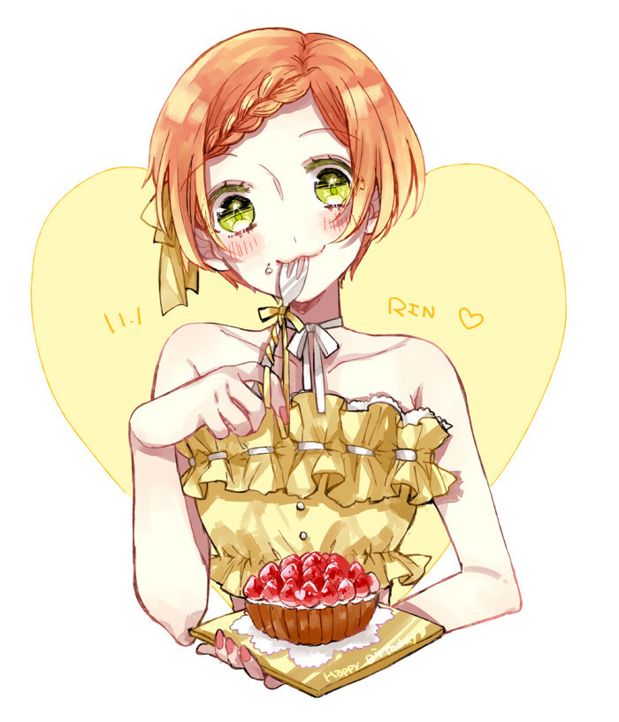
At the age of 15.First year of high school.In the sports association has always been cheerful and lively, rather than unhappy as the body first action type.Everything for the "it seems fun" reason.Although only in the sports department is very good at taking care of people, but also has been taking care of childhood sweetheart Hanayo.Whatever is said will be very big, and then simply practice.
Koizumi Hanayo
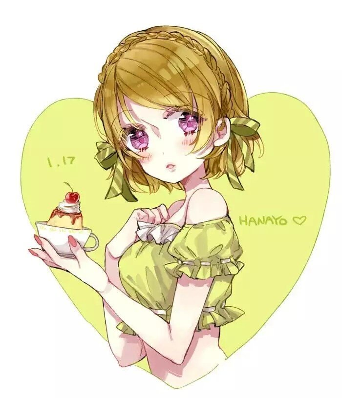
At the age of 15.First year of high school.In the class is not how prominent, quite honest quiet girl.Lack of confidence, do anything is easy to give up.Looking forward to muon's and eventually joining Rin and Maki.And rinn's relationship is very good, all the time together.I like white rice very much.
Ayase Eli
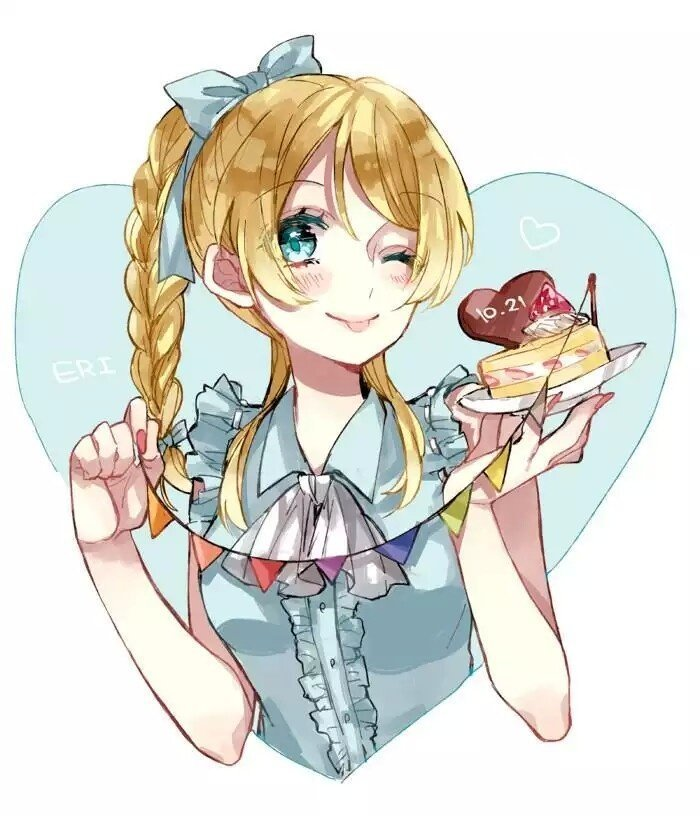
17 years old.Junior year of high school.President of the student council, a quarter Russian.Smart mind, motor nerve extraction, no matter what can be done.He is very popular in the school and has a strong sense of responsibility, so he serves as the student President.
Tojo Nozomi
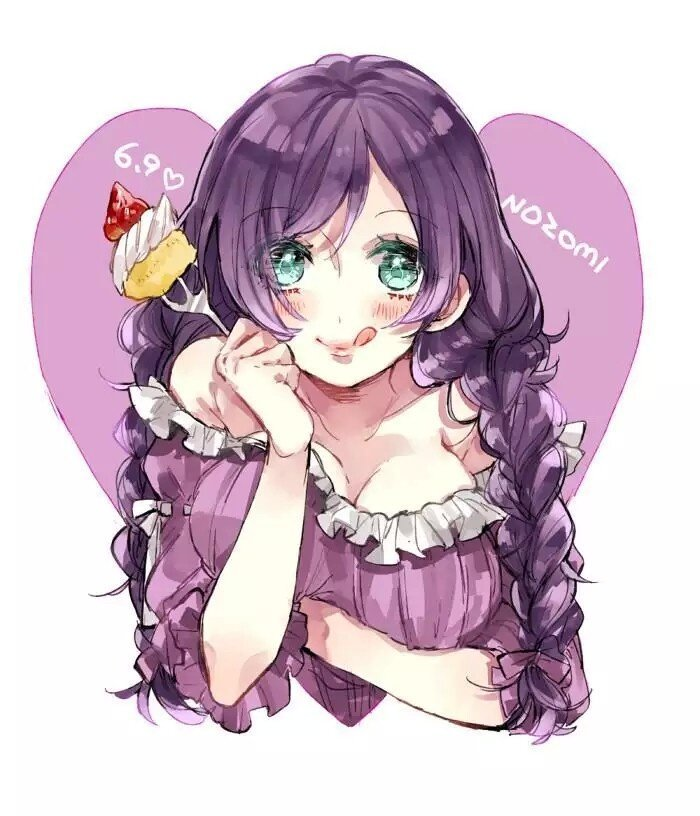
17 years old.3 years in high school.Vice President of student union.In contrast to Eli's individualistic personality, he has a unique way of speaking mixed with kansai accent.It is a good partner with a calm personality.The character is open and generous, in all the members are also considered to be the most mature spiritual age.A bit of a fool, but a counselor?
Yazawa Nico
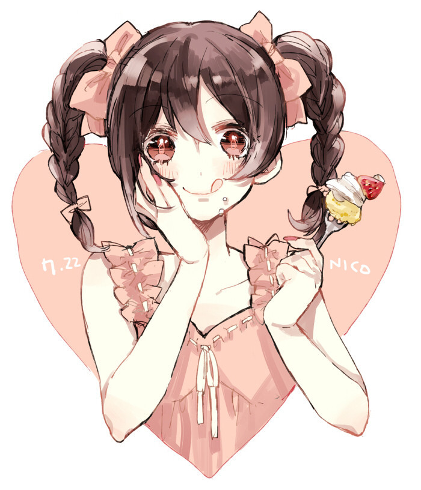
17 years old.Junior year of high school.Idol as the goal of day and night assiduous study, really true idol Otaku.As an idol as the goal of predecessors and often with a very great attitude and Honoka they contact.At the same time, there are a lot of clumsy children who fail unexpectedly in this aspect.Slogan is にこにこに!(nico nico ni~).
Love live
| μ's | Aqour's | Like | 100% | 100% | 100% |
|---|---|---|---|
| Dislike | 0% | 0% | 0% |
| Neutrality | 0% | 0% | 0% |